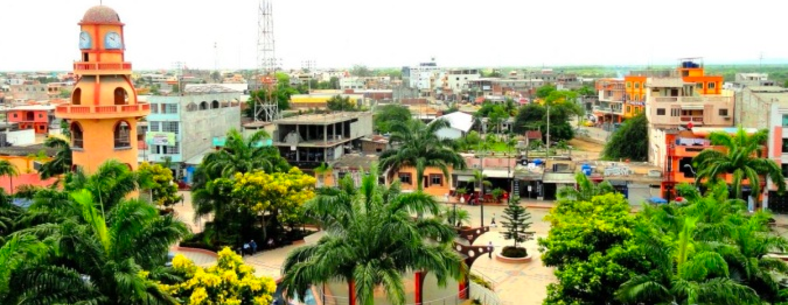

Provincia El ORO
¡Bienvenidos a la página que te llevará a un emocionante viaje a través de la maravillosa provincia de El Oro, Ecuador! Aquí encontrarás un tesoro de experiencias únicas y sitios turísticos que te dejarán asombrado.
Se fundó el 23 de abril de 1884. Los antiguos habitantes de El Oro provinieron de la Isla Puná. Luego se asentaron los Tumbez, los Mayavicas y los Piuras, en el preincario. La conquista incásica no influyó significativamente en aquellos pueblos. Los españoles ingresaron por Tumbez, que se convirtió luego en un puerto clave porque fue el asiento de las minas de Zaruma, cuya fama traspasó las fronteras.
